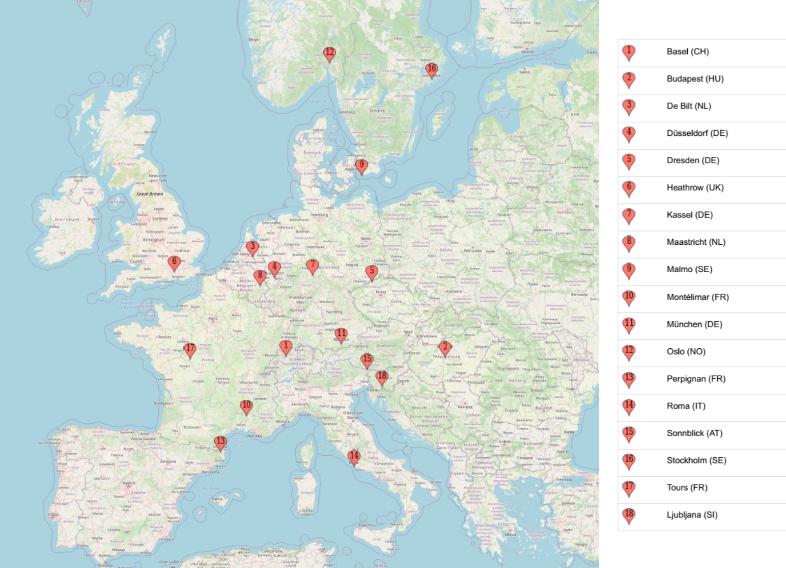
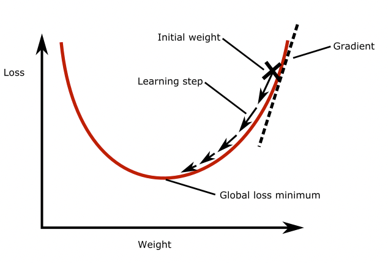
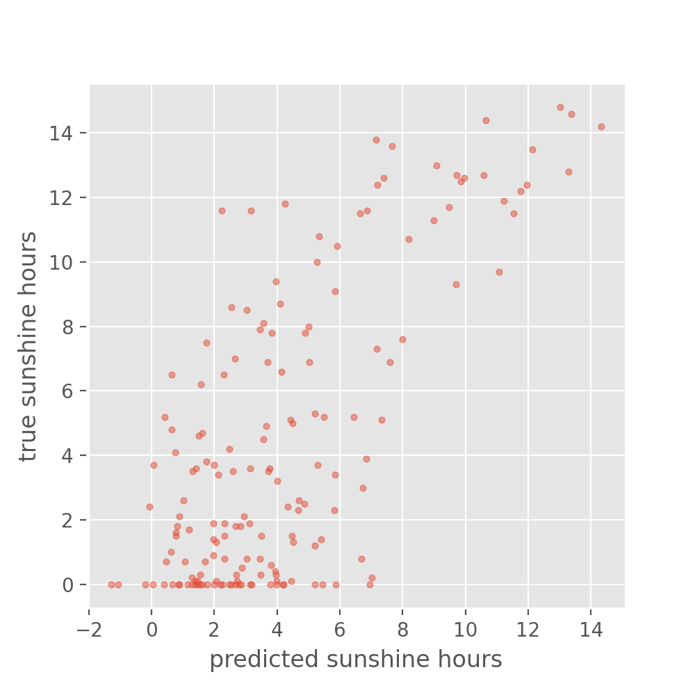

3. Monitor the training process
Questions
How do I create a neural network for a regression task?
How does optimization work?
How do I monitor the training process?
How do I detect (and avoid) overfitting?
What are common options to improve the model performance?
Objectives
Explain the importance of keeping your test set clean, by validating on the validation set instead of the test set
Use the data splits to plot the training process
Explain how optimization works
Design a neural network for a regression task
Measure the performance of your deep neural network
Interpret the training plots to recognize overfitting
Use normalization as preparation step for deep learning
Implement basic strategies to prevent overfitting
Copy-pasting code
In this episode we first introduce a simple approach to the problem, then we iterate on that a few times to, step-by-step, working towards a more complex solution. Unfortunately, this involves using the same code repeatedly over and over again, only slightly adapting it.
To avoid too much typing, it can help to copy-paste code from higher up in the notebook. Be sure to make it clear where you are copying from and what you are actually changing in the copied code. It can for example help to add a comment to the lines that you added.
In this episode we will explore how to monitor the training progress, evaluate our the model predictions and finetune the model to avoid over-fitting. For that we will use a more complicated weather data-set.
1. Formulate / Outline the problem: weather prediction
Here we want to work with the weather prediction dataset (the light version) which can be downloaded from Zenodo. It contains daily weather observations from 11 different European cities or places through the years 2000 to 2010. For all locations the data contains the variables ‘mean temperature’, ‘max temperature’, and ‘min temperature’. In addition, for multiple locations, the following variables are provided: ‘cloud_cover’, ‘wind_speed’, ‘wind_gust’, ‘humidity’, ‘pressure’, ‘global_radiation’, ‘precipitation’, ‘sunshine’, but not all of them are provided for every location. A more extensive description of the dataset including the different physical units is given in accompanying metadata file. The full dataset comprises of 10 years (3654 days) of collected weather data across Europe.

European locations in the weather prediction dataset
A very common task with weather data is to make a prediction about the weather sometime in the future, say the next day. In this episode, we will try to predict tomorrow’s sunshine hours, a challenging-to-predict feature, using a neural network with the available weather data for one location: BASEL.
2. Identify inputs and outputs
Import Dataset
We will now import and explore the weather data-set:
Load the data
If you have not downloaded the data yet, you can also load it directly from Zenodo:
data = pd.read_csv("https://zenodo.org/record/5071376/files/weather_prediction_dataset_light.csv?download=1")
SSL certificate error
If you get the following error message: certificate verify failed: unable to get local issuer certificate,
you can download the data from here manually
into a local folder and load the data using the code below.
import pandas as pd
filename_data = "weather_prediction_dataset_light.csv"
data = pd.read_csv(filename_data)
data.head()
DATE |
MONTH |
BASEL_cloud_cover |
BASEL_humidity |
BASEL_pressure |
… |
|
|---|---|---|---|---|---|---|
0 |
20000101 |
1 |
8 |
0.89 |
1.0286 |
… |
1 |
20000102 |
1 |
8 |
0.87 |
1.0318 |
… |
2 |
20000103 |
1 |
5 |
0.81 |
1.0314 |
… |
3 |
20000104 |
1 |
7 |
0.79 |
1.0262 |
… |
4 |
20000105 |
1 |
5 |
0.90 |
1.0246 |
… |
Brief exploration of the data
Let us start with a quick look at the type of features that we find in the data.
data.columns
Index(['DATE', 'MONTH', 'BASEL_cloud_cover', 'BASEL_humidity',
'BASEL_pressure', 'BASEL_global_radiation', 'BASEL_precipitation',
'BASEL_sunshine', 'BASEL_temp_mean', 'BASEL_temp_min', 'BASEL_temp_max',
...
'SONNBLICK_temp_min', 'SONNBLICK_temp_max', 'TOURS_humidity',
'TOURS_pressure', 'TOURS_global_radiation', 'TOURS_precipitation',
'TOURS_temp_mean', 'TOURS_temp_min', 'TOURS_temp_max'],
dtype='object')
There is a total of 9 different measured variables (global_radiation, humidity, etcetera)
Let’s have a look at the shape of the dataset:
data.shape
(3654, 91)
This will give both the number of samples (3654) and the number of features (89 + month + date).
For any row i, we will use the values of all fields except MONTH and DATE as the input features X.
We want to use them to forecast the number of sunshine hours of the next day,
hence we use the value of the field BASEL_sunshine in the subsequent row (i+1) as the label that we want to predict (y).
3. Prepare data
Select a subset and split into data (X) and labels (y)
The full dataset comprises of 10 years (3654 days) from which we will select only the first 3 years. The present dataset is sorted by “DATE”, so for each row i in the table we can pick a corresponding feature and location from row i+1 that we later want to predict with our model. As outlined in step 1, we would like to predict the sunshine hours for the location: BASEL.
nr_rows = 365*3 # 3 years
# data
X_data = data.loc[:nr_rows] # Select first 3 years
X_data = X_data.drop(columns=['DATE', 'MONTH']) # Drop date and month column
# labels (sunshine hours the next day)
y_data = data.loc[1:(nr_rows + 1)]["BASEL_sunshine"]
In general, it is important to check if the data contains any unexpected values such as 9999 or NaN or NoneType. You can use the pandas data.describe() or data.isnull() function for this. If so, such values must be removed or replaced.
In the present case the data is luckily well prepared and shouldn’t contain such values, so that this step can be omitted.
Split data and labels into training, validation, and test set
As with classical machine learning techniques, it is required in deep learning to split off a hold-out test set which remains untouched during model training and tuning. It is later used to evaluate the model performance. On top, we will also split off an additional validation set, the reason of which will hopefully become clearer later in this lesson.
To make our lives a bit easier, we employ a trick to create these 3 datasets, training set, test set and validation set, by calling the train_test_split method of scikit-learn twice.
First we create the training set and leave the remainder of 30 % of the data to the two hold-out sets.
from sklearn.model_selection import train_test_split
X_train, X_holdout, y_train, y_holdout = train_test_split(X_data, y_data, test_size=0.3, random_state=0)
Now we split the 30 % of the data in two equal sized parts.
X_val, X_test, y_val, y_test = train_test_split(X_holdout, y_holdout, test_size=0.5, random_state=0)
Setting the random_state to 0 is a short-hand at this point. Note however, that changing this seed of the pseudo-random number generator will also change the composition of your data sets. For the sake of reproducibility, this is one example of a parameters that should not change at all.
BREAK
This is a good time for switching instructor and/or a break.
4. Choose a pretrained model or start building architecture from scratch
Regression and classification
In episode 2 we trained a dense neural network on a classification task. For this one hot encoding was used together with a Categorical Crossentropy loss function.
This measured how close the distribution of the neural network outputs corresponds to the distribution of the three values in the one hot encoding.
Now we want to work on a regression task, thus not predicting a class label (or integer number) for a datapoint. In regression, we predict one (and sometimes many) values of a feature. This is typically a floating point number.
Exercise: Architecture of the network
As we want to design a neural network architecture for a regression task, see if you can first come up with the answers to the following questions:
What must be the dimension of our input layer?
We want to output the prediction of a single number. The output layer of the NN hence cannot be the same as for the classification task earlier. This is because the
softmaxactivation being used had a concrete meaning with respect to the class labels which is not needed here. What output layer design would you choose for regression? Hint: A layer withreluactivation, withsigmoidactivation or no activation at all?(Optional) How would we change the model if we would like to output a prediction of the precipitation in Basel in addition to the sunshine hours?
Solution
The shape of the input layer has to correspond to the number of features in our data: 89
The output is a single value per prediction, so the output layer can consist of a dense layer with only one node. The softmax activiation function works well for a classification task, but here we do not want to restrict the possible outcomes to the range of zero and one. In fact, we can omit the activation in the output layer.
The output layer should have 2 neurons, one for each number that we try to predict. Our y_train (and val and test) then becomes a (n_samples, 2) matrix.
In our example we want to predict the sunshine hours in Basel (or any other place in the dataset) for tomorrow based on the weather data of all 18 locations today. BASEL_sunshine is a floating point value (i.e. float64). The network should hence output a single float value which is why the last layer of our network will only consist of a single node.
We compose a network of two hidden layers to start off with something. We go by a scheme with 100 neurons in the first hidden layer and 50 neurons in the second layer. As activation function we settle on the relu function as a it is very robust and widely used. To make our live easier later, we wrap the definition of the network in a function called create_nn().
from tensorflow import keras
def create_nn(input_shape):
# Input layer
inputs = keras.Input(shape=input_shape, name='input')
# Dense layers
layers_dense = keras.layers.Dense(100, 'relu')(inputs)
layers_dense = keras.layers.Dense(50, 'relu')(layers_dense)
# Output layer
outputs = keras.layers.Dense(1)(layers_dense)
return keras.Model(inputs=inputs, outputs=outputs, name="weather_prediction_model")
model = create_nn(input_shape=(X_data.shape[1],))
The shape of the input layer has to correspond to the number of features in our data: 89. We use X_data.shape[1] to obtain this value dynamically
The output layer here is a dense layer with only 1 node. And we here have chosen to use no activation function. While we might use softmax for a classification task, here we do not want to restrict the possible outcomes for a start.
In addition, we have here chosen to write the network creation as a function so that we can use it later again to initiate new models.
Let us check how our model looks like by calling the summary method.
model.summary()
Model: "weather_prediction_model"
┏━━━━━━━━━━━━━━━━━━━━━━━━━━━━━┳━━━━━━━━━━━━━━━━━━━━━┳━━━━━━━━━━━━━━━┓
┃ Layer (type) ┃ Output Shape ┃ Param # ┃
┡━━━━━━━━━━━━━━━━━━━━━━━━━━━━━╇━━━━━━━━━━━━━━━━━━━━━╇━━━━━━━━━━━━━━━┩
│ input (InputLayer) │ (None, 89) │ 0 │
├─────────────────────────────┼─────────────────────┼───────────────┤
│ dense (Dense) │ (None, 100) │ 9,000 │
├─────────────────────────────┼─────────────────────┼───────────────┤
│ dense_1 (Dense) │ (None, 50) │ 5,050 │
├─────────────────────────────┼─────────────────────┼───────────────┤
│ dense_2 (Dense) │ (None, 1) │ 51 │
└─────────────────────────────┴─────────────────────┴───────────────┘
Total params: 14,101 (55.08 KB)
Trainable params: 14,101 (55.08 KB)
Non-trainable params: 0 (0.00 B)
When compiling the model we can define a few very important aspects. We will discuss them now in more detail.
Intermezzo: How do neural networks learn?
In the introduction we learned about the loss function: it quantifies the total error of the predictions made by the model. During model training we aim to find the model parameters that minimize the loss. This is called optimization, but how does optimization actually work?
Gradient descent
Gradient descent is a widely used optimization algorithm, most other optimization algorithms are based on it. It works as follows: Imagine a neural network with only one neuron. Take a look at the figure below. The plot shows the loss as a function of the weight of the neuron. As you can see there is a global loss minimum, we would like to find the weight at this point in the parabola. To do this, we initialize the model weight with some random value. Then we compute the gradient of the loss function with respect to the weight. This tells us how much the loss function will change if we change the weight by a small amount. Then, we update the weight by taking a small step in the direction of the negative gradient, so down the slope. This will slightly decrease the loss. This process is repeated until the loss function reaches a minimum. The size of the step that is taken in each iteration is called the ‘learning rate’.

Batch gradient descent
You could use the entire training dataset to perform one learning step in gradient descent, which would mean that one epoch equals one learning step. In practice, in each learning step we only use a subset of the training data to compute the loss and the gradients. This subset is called a ‘batch’, the number of samples in one batch is called the ‘batch size’.
Exercise: Gradient descent
Answer the following questions:
1. What is the goal of optimization?
A. To find the weights that maximize the loss function
B. To find the weights that minimize the loss function
2. What happens in one gradient descent step?
A. The weights are adjusted so that we move in the direction of the gradient, so up the slope of the loss function
B. The weights are adjusted so that we move in the direction of the gradient, so down the slope of the loss function
C. The weights are adjusted so that we move in the direction of the negative gradient, so up the slope of the loss function
D. The weights are adjusted so that we move in the direction of the negative gradient, so down the slope of the loss function
3. When the batch size is increased: (multiple answers might apply)
A. The number of samples in an epoch also increases
B. The number of batches in an epoch goes down
C. The training progress is more jumpy, because more samples are consulted in each update step (one batch).
D. The memory load (memory as in computer hardware) of the training process is increased
Solution
Correct answer: B. To find the weights that minimize the loss function. The loss function quantifies the total error of the network, we want to have the smallest error as possible, hence we minimize the loss.
Correct answer: D The weights are adjusted so that we move in the direction of the negative gradient, so down the slope of the loss function. We want to move towards the global minimum, so in the opposite direction of the gradient.
Correct answer: B & D
A. The number of samples in an epoch also increases (incorrect, an epoch is always defined as passing through the training data for one cycle)
B. The number of batches in an epoch goes down (correct, the number of batches is the samples in an epoch divided by the batch size)
C. The training progress is more jumpy, because more samples are consulted in each update step (one batch). (incorrect, more samples are consulted in each update step, but this makes the progress less jumpy since you get a more accurate estimate of the loss in the entire dataset)
D. The memory load (memory as in computer hardware) of the training process is increased (correct, the data is begin loaded one batch at a time, so more samples means more memory usage)
5. Choose a loss function and optimizer
Loss function
The loss is what the neural network will be optimized on during training, so choosing a suitable loss function is crucial for training neural networks.
In the given case we want to stimulate that the predicted values are as close as possible to the true values. This is commonly done by using the mean squared error (mse) or the mean absolute error (mae), both of which should work OK in this case. Often, mse is preferred over mae because it “punishes” large prediction errors more severely.
In Keras this is implemented in the keras.losses.MeanSquaredError class (see Keras documentation: https://keras.io/api/losses/). This can be provided into the model.compile method with the loss parameter and setting it to mse, e.g.
model.compile(loss='mse')
Optimizer
Somewhat coupled to the loss function is the optimizer that we want to use. The optimizer here refers to the algorithm with which the model learns to optimize on the provided loss function. A basic example for such an optimizer would be stochastic gradient descent. For now, we can largely skip this step and pick one of the most common optimizers that works well for most tasks: the Adam optimizer. Similar to activation functions, the choice of optimizer depends on the problem you are trying to solve, your model architecture and your data. Adam is a good starting point though, which is why we chose it.
model.compile(optimizer='adam',
loss='mse')
Metrics
In our first example (episode 2) we plotted the progression of the loss during training. That is indeed a good first indicator if things are working alright, i.e. if the loss is indeed decreasing as it should with the number of epochs. However, when models become more complicated then also the loss functions often become less intuitive. That is why it is good practice to monitor the training process with additional, more intuitive metrics. They are not used to optimize the model, but are simply recorded during training.
With Keras, such additional metrics can be added via metrics=[...] parameter and can contain one or multiple metrics of interest.
Here we could for instance chose mae (mean absolute error), or the the root mean squared error (RMSE) which unlike the mse has the same units as the predicted values. For the sake of units, we choose the latter.
model.compile(optimizer='adam',
loss='mse',
metrics=[keras.metrics.RootMeanSquaredError()])
Let’s create a compile_model function to easily compile the model throughout this lesson:
def compile_model(model):
model.compile(optimizer='adam',
loss='mse',
metrics=[keras.metrics.RootMeanSquaredError()])
compile_model(model)
With this, we complete the compilation of our network and are ready to start training.
6. Train the model
Now that we created and compiled our dense neural network, we can start training it.
We add the batch_size parameter that defines – as discussed above – how many samples from the training data will be used to estimate the error gradient before the model weights are updated.
Larger batches will produce better, more accurate gradient estimates but also less frequent updates of the weights.
Here we are going to use a batch size of 32 which is a common starting point.
history = model.fit(X_train, y_train,
batch_size=32,
epochs=200,
verbose=2)
We can plot the training process using the history object returned from the model training.
We will create a function for it, because we will make use of this more often in this lesson!
import seaborn as sns
import matplotlib.pyplot as plt
def plot_history(history, metrics):
"""
Plot the training history
Args:
history (keras History object that is returned by model.fit())
metrics (str, list): Metric or a list of metrics to plot
"""
history_df = pd.DataFrame.from_dict(history.history)
sns.lineplot(data=history_df[metrics])
plt.xlabel("epochs")
plt.ylabel("metric")
plot_history(history, 'root_mean_squared_error')
This looks very promising! Our metric (“RMSE”) is dropping nicely and while it maybe keeps fluctuating a bit it does end up at fairly low RMSE values. But the RMSE is just the root mean squared error, so we might want to look a bit more in detail how well our just trained model does in predicting the sunshine hours.
7. Perform a Prediction/Classification
Now that we have our model trained, we can make a prediction with the model before measuring the performance of our neural network.
y_train_predicted = model.predict(X_train)
y_test_predicted = model.predict(X_test)
BREAK
This is a good time for switching instructor and/or a break.
8. Measure performance
There is not a single way to evaluate how a model performs. But there are at least two very common approaches. For a classification task that is to compute a confusion matrix for the test set which shows how often particular classes were predicted correctly or incorrectly.
For the present regression task, it makes more sense to compare true and predicted values in a scatter plot.
So, let’s look at how the predicted sunshine hour have developed with reference to their ground truth values.
# We define a function that we will reuse in this lesson
def plot_predictions(y_pred, y_true, title):
plt.style.use('ggplot') # optional, that's only to define a visual style
plt.scatter(y_pred, y_true, s=10, alpha=0.5)
plt.xlabel("predicted sunshine hours")
plt.ylabel("true sunshine hours")
plt.title(title)
plot_predictions(y_train_predicted, y_train, title='Predictions on the training set')

plot_predictions(y_test_predicted, y_test, title='Predictions on the test set')

Exercise: Reflecting on our results
Is the performance of the model as you expected (or better/worse)?
Is there a noteable difference between training set and test set? And if so, any idea why?
(Optional) When developing a model, you will often vary different aspects of your model like which features you use, model parameters and architecture. It is important to settle on a single-number evaluation metric to compare your models.
What single-number evaluation metric would you choose here and why?
Solution
While the performance on the train set seems reasonable, the performance on the test set is much worse. This is a common problem called overfitting, which we will discuss in more detail later.
Optional exercise:
The metric that we are using: RMSE would be a good one. You could also consider Mean Squared Error, that punishes large errors more (because large errors create even larger squared errors). It is important that if the model improves in performance on the basis of this metric then that should also lead you a step closer to reaching your goal: to predict tomorrow’s sunshine hours. If you feel that improving the metric does not lead you closer to your goal, then it would be better to choose a different metric
The accuracy on the training set seems fairly good. In fact, considering that the task of predicting the daily sunshine hours is really not easy it might even be surprising how well the model predicts that (at least on the training set). Maybe a little too good? We also see the noticeable difference between train and test set when calculating the exact value of the RMSE:
train_metrics = model.evaluate(X_train, y_train, return_dict=True)
test_metrics = model.evaluate(X_test, y_test, return_dict=True)
print('Train RMSE: {:.2f}, Test RMSE: {:.2f}'.format(train_metrics['root_mean_squared_error'], test_metrics['root_mean_squared_error']))
24/24 [==============================] - 0s 442us/step - loss: 0.7092 - root_mean_squared_error: 0.8421
6/6 [==============================] - 0s 647us/step - loss: 16.4413 - root_mean_squared_error: 4.0548
Train RMSE: 0.84, Test RMSE: 4.05
For those experienced with (classical) machine learning this might look familiar. The plots above expose the signs of overfitting which means that the model has to some extent memorized aspects of the training data. As a result, it makes much more accurate predictions on the training data than on unseen test data.
Overfitting also happens in classical machine learning, but there it is usually interpreted as the model having more parameters than the training data would justify (say, a decision tree with too many branches for the number of training instances). As a consequence one would reduce the number of parameters to avoid overfitting. In deep learning the situation is slightly different. It can - as for classical machine learning - also be a sign of having a too big model, meaning a model with too many parameters (layers and/or nodes). However, in deep learning higher number of model parameters are often still considered acceptable and models often perform best (in terms of prediction accuracy) when they are at the verge of overfitting. So, in a way, training deep learning models is always a bit like playing with fire…
Set expectations: How difficult is the defined problem?
Before we dive deeper into handling overfitting and (trying to) improving the model performance, let us ask the question: How well must a model perform before we consider it a good model?
Now that we defined a problem (predict tomorrow’s sunshine hours), it makes sense to develop an intuition for how difficult the posed problem is. Frequently, models will be evaluated against a so called baseline. A baseline can be the current standard in the field or if such a thing does not exist it could also be an intuitive first guess or toy model. The latter is exactly what we would use for our case.
Maybe the simplest sunshine hour prediction we can easily do is: Tomorrow we will have the same number of sunshine hours as today. (sounds very naive, but for many observables such as temperature this is already a fairly good predictor)
We can take the BASEL_sunshine column of our data, because this contains the sunshine hours from one day before what we have as a label.
y_baseline_prediction = X_test['BASEL_sunshine']
plot_predictions(y_baseline_prediction, y_test, title='Baseline predictions on the test set')

It is difficult to interpret from this plot whether our model is doing better than the baseline. We can also have a look at the RMSE:
from sklearn.metrics import root_mean_squared_error
rmse_baseline = root_mean_squared_error(y_test, y_baseline_prediction)
print('Baseline:', rmse_baseline)
print('Neural network: ', test_metrics['root_mean_squared_error'])
Baseline: 3.877323350410224
Neural network: 4.077792167663574
Judging from the numbers alone, our neural network prediction would be performing worse than the baseline.
Exercise: Baseline
Looking at this baseline: Would you consider this a simple or a hard problem to solve?
(Optional) Can you think of other baselines?
Solution
This really depends on your definition of hard! The baseline gives a more accurate prediction than just randomly predicting a number, so the problem is not impossible to solve with machine learning. However, given the structure of the data and our expectations with respect to quality of prediction, it may remain hard to find a good algorithm which exceeds our baseline by orders of magnitude.
There are a lot of possible answers. A slighly more complicated baseline would be to take the average over the last couple of days.
9. Refine the model
Watch your model training closely
As we saw when comparing the predictions for the training and the test set, deep learning models are prone to overfitting. Instead of iterating through countless cycles of model trainings and subsequent evaluations with a reserved test set, it is common practice to work with a second split off dataset to monitor the model during training. This is the validation set which can be regarded as a second test set. As with the test set, the datapoints of the validation set are not used for the actual model training itself. Instead, we evaluate the model with the validation set after every epoch during training, for instance to stop if we see signs of clear overfitting.
Since we are adapting our model (tuning our hyperparameters) based on this validation set, it is very important that it is kept separate from the test set. If we used the same set, we would not know whether our model truly generalizes or is only overfitting.
Test vs. validation set
Not everybody agrees on the terminology of test set versus validation set. You might find examples in literature where these terms are used the other way around. We are sticking to the definition that is consistent with the Keras API. In there, the validation set can be used during training, and the test set is reserved for afterwards.
Let’s give this a try!
We need to initiate a new model – otherwise Keras will simply assume that we want to continue training the model we already trained above.
model = create_nn(input_shape=(X_data.shape[1],))
compile_model(model)
But now we train it with the small addition of also passing it our validation set:
history = model.fit(X_train, y_train,
batch_size=32,
epochs=200,
validation_data=(X_val, y_val))
With this we can plot both the performance on the training data and on the validation data!
plot_history(history, ['root_mean_squared_error', 'val_root_mean_squared_error'])
Exercise: plot the training progress.
Is there a difference between the training curves of training versus validation data? And if so, what would this imply?
(Optional) Take a pen and paper, draw the perfect training and validation curves. (This may seem trivial, but it will trigger you to think about what you actually would like to see)
Solution
The difference in the two curves shows that something is not completely right here. The error for the model predictions on the validation set quickly seem to reach a plateau while the error on the training set keeps decreasing. That is a common signature of overfitting.
Optional:
Ideally you would like the training and validation curves to be identical and slope down steeply to 0. After that the curves will just consistently stay at 0.
Counteract model overfitting
Overfitting is a very common issue and there are many strategies to handle it. Most similar to classical machine learning might to reduce the number of parameters.
Exercise: Try to reduce the degree of overfitting by lowering the number of parameters
We can keep the network architecture unchanged (2 dense layers + a one-node output layer) and only play with the number of nodes per layer. Try to lower the number of nodes in one or both of the two dense layers and observe the changes to the training and validation losses. If time is short: Suggestion is to run one network with only 10 and 5 nodes in the first and second layer.
Is it possible to get rid of overfitting this way?
Does the overall performance suffer or does it mostly stay the same?
(optional) How low can you go with the number of parameters without notable effect on the performance on the validation set?
Solution
Let’s first adapt our create_nn() function so that we can tweak the number of nodes in the 2 layers
by passing arguments to the function:
def create_nn(input_shape, nodes1=100, nodes2=50):
# Input layer
inputs = keras.layers.Input(shape=input_shape, name='input')
# Dense layers
layers_dense = keras.layers.Dense(nodes1, 'relu')(inputs)
layers_dense = keras.layers.Dense(nodes2, 'relu')(layers_dense)
# Output layer
outputs = keras.layers.Dense(1)(layers_dense)
return keras.Model(inputs=inputs, outputs=outputs, name="model_small")
Let’s see if it works by creating a much smaller network with 10 nodes in the first layer, and 5 nodes in the second layer:
model = create_nn(input_shape=(X_data.shape[1],), nodes1=10, nodes2=5)
model.summary()
Model: "model_small"
┏━━━━━━━━━━━━━━━━━━━━━━━━━━━━━┳━━━━━━━━━━━━━━━━━━━━━┳━━━━━━━━━━━━━━━┓
┃ Layer (type) ┃ Output Shape ┃ Param # ┃
┡━━━━━━━━━━━━━━━━━━━━━━━━━━━━━╇━━━━━━━━━━━━━━━━━━━━━╇━━━━━━━━━━━━━━━┩
│ input (InputLayer) │ (None, 89) │ 0 │
├─────────────────────────────┼─────────────────────┼───────────────┤
│ dense_9 (Dense) │ (None, 10) │ 900 │
├─────────────────────────────┼─────────────────────┼───────────────┤
│ dense_10 (Dense) │ (None, 5) │ 55 │
├─────────────────────────────┼─────────────────────┼───────────────┤
│ dense_11 (Dense) │ (None, 1) │ 6 │
└─────────────────────────────┴─────────────────────┴───────────────┘
Total params: 961 (3.75 KB)
Trainable params: 961 (3.75 KB)
Non-trainable params: 0 (0.00 B)
Let’s compile and train this network:
compile_model(model)
history = model.fit(X_train, y_train,
batch_size = 32,
epochs = 200,
validation_data=(X_val, y_val))
plot_history(history, ['root_mean_squared_error', 'val_root_mean_squared_error'])

With this smaller model we have reduced overfitting a bit, since the training and validation loss are now closer to each other, and the validation loss does now reach a plateau and does not further increase. We have not completely avoided overfitting though.
In the case of this small example model, the validation RMSE seems to end up around 3.2, which is much better than the 4.08 we had before. Note that you can double check the actual score by calling
model.evaluate()on the test set.In general, it quickly becomes a complicated search for the right “sweet spot”, i.e. the settings for which overfitting will be (nearly) avoided but the model still performs equally well. A model with 3 neurons in both layers seems to be around this spot, reaching an RMSE of 3.1 on the validation set. Reducing the number of nodes further increases the validation RMSE again.
We saw that reducing the number of parameters can be a strategy to avoid overfitting. In practice, however, this is usually not the (main) way to go when it comes to deep learning. One reason is, that finding the sweet spot can be really hard and time consuming. And it has to be repeated every time the model is adapted, e.g. when more training data becomes available.
Early stopping: stop when things are looking best
Arguable the most common technique to avoid (severe) overfitting in deep learning is called early stopping. As the name suggests, this technique just means that you stop the model training if things do not seem to improve anymore. More specifically, this usually means that the training is stopped if the validation loss does not (notably) improve anymore. Early stopping is both intuitive and effective to use, so it has become a standard addition for model training.
To better study the effect, we can now safely go back to models with many (too many?) parameters:
model = create_nn(input_shape=(X_data.shape[1],))
compile_model(model)
To apply early stopping during training it is easiest to use Keras EarlyStopping class.
This allows to define the condition of when to stop training. In our case we will say when the validation loss is lowest.
However, since we have seen some fluctuation of the losses during training above we will also set patience=10 which means that the model will stop training if the validation loss has not gone down for 10 epochs.
from tensorflow.keras.callbacks import EarlyStopping
earlystopper = EarlyStopping(
monitor='val_loss',
patience=10
)
history = model.fit(X_train, y_train,
batch_size = 32,
epochs = 200,
validation_data=(X_val, y_val),
callbacks=[earlystopper])
As before, we can plot the losses during training:
plot_history(history, ['root_mean_squared_error', 'val_root_mean_squared_error'])

This still seems to reveal the onset of overfitting, but the training stops before the discrepancy between training and validation loss can grow further. In addition to avoiding severe cases of overfitting, early stopping has the advantage that the number of training epochs will be regulated automatically.
What might be a bit unintuitive is that the training runs might now end very rapidly. This raises the question: have we really reached an optimum yet? And often the answer to this is “no”, which is why early stopping frequently is combined with other approaches to avoid overfitting. Overfitting means that a model (seemingly) performs better on seen data compared to unseen data. One then often also says that it does not “generalize” well. Techniques to avoid overfitting, or to improve model generalization, are termed regularization techniques and we will come back to this in episode 4.
BatchNorm: the “standard scaler” for deep learning
A very common step in classical machine learning pipelines is to scale the features, for instance by using sckit-learn’s StandardScaler.
This can in principle also be done for deep learning.
An alternative, more common approach, is to add BatchNormalization layers (documentation of the batch normalization layer) which will learn how to scale the input values.
Similar to dropout, batch normalization is available as a network layer in Keras and can be added to the network in a similar way.
It does not require any additional parameter setting.
The BatchNormalization can be inserted as yet another layer into the architecture.
def create_nn(input_shape):
# Input layer
inputs = keras.layers.Input(shape=input_shape, name='input')
# Dense layers
layers_dense = keras.layers.BatchNormalization()(inputs) # This is new!
layers_dense = keras.layers.Dense(100, 'relu')(layers_dense)
layers_dense = keras.layers.Dense(50, 'relu')(layers_dense)
# Output layer
outputs = keras.layers.Dense(1)(layers_dense)
# Defining the model and compiling it
return keras.Model(inputs=inputs, outputs=outputs, name="model_batchnorm")
model = create_nn(input_shape=(X_data.shape[1],))
compile_model(model)
model.summary()
This new layer appears in the model summary as well.
Model: "model_batchnorm"
┏━━━━━━━━━━━━━━━━━━━━━━━━━━━━━┳━━━━━━━━━━━━━━━━━━━━━┳━━━━━━━━━━━━━━━┓
┃ Layer (type) ┃ Output Shape ┃ Param # ┃
┡━━━━━━━━━━━━━━━━━━━━━━━━━━━━━╇━━━━━━━━━━━━━━━━━━━━━╇━━━━━━━━━━━━━━━┩
│ input (InputLayer) │ (None, 89) │ 0 │
├─────────────────────────────┼─────────────────────┼───────────────┤
│ batch_normalization_1 │ (None, 89) │ 356 │
│ (BatchNormalization) │ │ │
├─────────────────────────────┼─────────────────────┼───────────────┤
│ dense_6 (Dense) │ (None, 100) │ 9,000 │
├─────────────────────────────┼─────────────────────┼───────────────┤
│ dense_7 (Dense) │ (None, 50) │ 5,050 │
├─────────────────────────────┼─────────────────────┼───────────────┤
│ dense_8 (Dense) │ (None, 1) │ 51 │
└─────────────────────────────┴─────────────────────┴───────────────┘
Total params: 14,457 (56.47 KB)
Trainable params: 14,279 (55.78 KB)
Non-trainable params: 178 (712.00 B)
We can train the model again as follows:
history = model.fit(X_train, y_train,
batch_size = 32,
epochs = 1000,
validation_data=(X_val, y_val),
callbacks=[earlystopper])
plot_history(history, ['root_mean_squared_error', 'val_root_mean_squared_error'])

Batchnorm parameters
You may have noticed that the number of parameters of the Batchnorm layers corresponds to 4 parameters per input node. These are the moving mean, moving standard deviation, additional scaling factor (gamma) and offset factor (beta). There is a difference in behavior for Batchnorm between training and prediction time. During training time, the data is scaled with the mean and standard deviation of the batch. During prediction time, the moving mean and moving standard deviation of the training set is used instead. The additional parameters gamma and beta are introduced to allow for more flexibility in output values, and are used in both training and prediction.
Run on test set and compare to naive baseline
It seems that no matter what we add, the overall loss does not decrease much further (we at least avoided overfitting though!). Let us again plot the results on the test set:
y_test_predicted = model.predict(X_test)
plot_predictions(y_test_predicted, y_test, title='Predictions on the test set')

Well, the above is certainly not perfect. But how good or bad is this? Maybe not good enough to plan your picnic for tomorrow. But let’s better compare it to the naive baseline we created in the beginning. What would you say, did we improve on that?
Exercise: Simplify the model and add data
You may have been wondering why we are including weather observations from multiple cities to predict sunshine hours only in Basel. The weather is a complex phenomenon with correlations over large distances and time scales, but what happens if we limit ourselves to only one city?
Since we will be reducing the number of features quite significantly, we could afford to include more data. Instead of using only 3 years, use 8 or 9 years!
Only use the features in the dataset that are for Basel, remove the data for other cities. You can use something like:
cols = [c for c in X_data.columns if c[:5] == 'BASEL']
X_data = X_data[cols]
Now rerun the last model we defined which included the BatchNorm layer. Recreate the scatter plot comparing your predictions with the true values, and evaluate the model by computing the RMSE on the test score. Note that even though we will use many more observations than previously, the network should still train quickly because we reduce the number of features (columns). Is the prediction better compared to what we had before?
(Optional) Try to train a model on all years that are available, and all features from all cities. How does it perform?
Solution
1. Use 9 years out of the dataset
nr_rows = 365*9
# data
X_data = data.loc[:nr_rows].drop(columns=['DATE', 'MONTH'])
# labels (sunshine hours the next day)
y_data = data.loc[1:(nr_rows + 1)]["BASEL_sunshine"]
2. Only use features for Basel
# only use columns with 'BASEL'
cols = [c for c in X_data.columns if c[:5] == 'BASEL']
X_data = X_data[cols]
3. Rerun the model and evaluate it
Do the train-test-validation split:
X_train, X_holdout, y_train, y_holdout = train_test_split(X_data, y_data, test_size=0.3, random_state=0)
X_val, X_test, y_val, y_test = train_test_split(X_holdout, y_holdout, test_size=0.5, random_state=0)
Create the network. We can re-use the create_nn() function that we already have. Because we have reduced the number of input features
the number of parameters in the network goes down from 14457 to 6137.
# create the network and view its summary
model = create_nn(input_shape=(X_data.shape[1],))
compile_model(model)
model.summary()
Fit with early stopping and output showing performance on validation set:
history = model.fit(X_train, y_train,
batch_size = 32,
epochs = 1000,
validation_data=(X_val, y_val),
callbacks=[earlystopper],
verbose = 2)
plot_history(history, ['root_mean_squared_error', 'val_root_mean_squared_error'])
Create a scatter plot to compare with true observations:
y_test_predicted = model.predict(X_test)
plot_predictions(y_test_predicted, y_test, title='Predictions on the test set')

Compute the RMSE on the test set:
test_metrics = model.evaluate(X_test, y_test, return_dict=True)
print(f'Test RMSE: {test_metrics["root_mean_squared_error"]}')
Test RMSE: 3.3761725425720215
This RMSE is already a lot better compared to what we had before and certainly better than the baseline. Additionally, it could be further improved with hyperparameter tuning.
Note that because we ran train_test_split() again, we are evaluating on a different test set than before.
In the real world it is important to always compare results on the exact same test set.
4. (optional) Train a model on all years and all features available.
You can tweak the above code to use all years and all features:
# We cannot take all rows, because we need to be able to take the sunshine hours of the next day
nr_rows = len(data) - 2
# data
X_data = data.loc[:nr_rows].drop(columns=['DATE', 'MONTH'])
# labels (sunshine hours the next day)
y_data = data.loc[1:(nr_rows + 1)]["BASEL_sunshine"]
For the rest you can use the same code as above to train and evaluate the model
This results in an RMSE on the test set of 3.23 (your result can be different, but should be in the same range). From this we can conclude that adding more training data results in even better performance!
Tensorboard
If we run many different experiments with different architectures, it can be difficult to keep track of these different models or compare the achieved performance. We can use tensorboard, a framework that keeps track of our experiments and shows graphs like we plotted above. Tensorboard is included in our tensorflow installation by default. To use it, we first need to add a callback to our (compiled) model that saves the progress of training performance in a logs rectory:
from tensorflow.keras.callbacks import TensorBoard
import datetime
log_dir = "logs/fit/" + datetime.datetime.now().strftime("%Y%m%d-%H%M%S") # You can adjust this to add a more meaningful model name
tensorboard_callback = TensorBoard(log_dir=log_dir, histogram_freq=1)
history = model.fit(X_train, y_train,
batch_size = 32,
epochs = 200,
validation_data=(X_val, y_val),
callbacks=[tensorboard_callback],
verbose = 2)
You can launch the tensorboard interface from a Jupyter notebook, showing all trained models:
%load_ext tensorboard
%tensorboard --logdir logs/fit
Which will show an interface that looks something like this:

10. Save model
Now that we have a somewhat acceptable model, let us not forget to save it for future users to benefit from our explorative efforts!
model.save('my_tuned_weather_model.keras')
Outlook
Correctly predicting tomorrow’s sunshine hours is apparently not that simple. Our models get the general trends right, but still predictions vary quite a bit and can even be far off.
Keypoints
Separate training, validation, and test sets allows monitoring and evaluating your model.
Batchnormalization scales the data as part of the model.